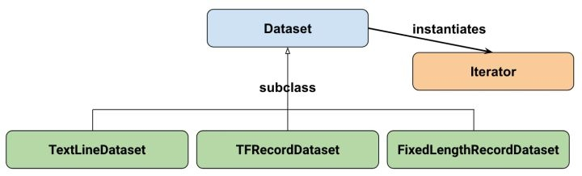

作为TensorFlow的入门玩家，之前向模型中输入数据的方式一直是采用定义输入placeholder，然后在session.run的时候通过feed_dict 将处理后的数据传入模型进行计算。但是根据TensorFlow官网说的，这种方式传数据是非常低效的，更推荐大家使用Dateset相关的api构建模型的输入pipeline，以保证GPU在工作的时候无需等待新数据的输入，提高训练效率。
本文就简单介绍一下，我在将feed_dict改为dataset api过程的一些总结。
1. 概述
1.1 使用流程
Dataset的使用流程大致可以看作为三步：
- 导入数据：根据数据创建dataset实例
- 创建iterator：根据dataset实例创建iterator实例
- 消费数据：根据创建好的iterator实例获取数据传入模型进行计算
1.2 基本概念
先看一下官方给出的Dataset API的类之间的继承关系：

其中Dataset的三个子类FixedLengthRecordDataset，TextLineDataset，TFRecordDataset分别处理不同的数据源文件。不过我在平时的任务中大部分是NLP相关的，使用的文本内容都是存储在txt或csv文件中的，只要使用基础类Dataset就够了。
而Dataset可以看作是相同类型元素的有序列表，这些元素可以是向量，可以是字符串，图片等等，它们的区别只是在于tensor的数据类型和形状的不同而已。
dataset实例创建好了之后就是考虑如何将元素从里面取出了，tensorflow采用的方式是根据这个dataset实例再实例化一个iterator，然后通过迭代的方式将元素取出并直接参与模型graph中的计算。
1.3 与feed_dict的对比
最明显的一个不同是，之前通过feed_dict的方式传入数据的话，在数据到达feed_dict之前的所有预处理过程都是在graph外进行的。这有的时候就会引入一个问题：在NLP任务中，经常需要将char或word转化为id的形式，以输入进embedding层。如果这个转换发生在graph之外，那我们利用导出的模型做inference的时候就必须带一个额外的char_to_id文件，否则就没办法知道char和id的对应关系了。
而dataset，从它创建之初，就已经是在graph里了，它的element就是tensor了，它将char向id转换的动作也是发生在graph里的，这个lookup的字典在导出模型的时候也会作为一个参数保存在模型里。因此在利用这个模型做inference的时候就不用额外的char_to_id文件了。当然python的dict是没办法对tensor做查找映射的，除非使用tf.py_func进行封装，不过好在tf提供了更好的方式处理这个问题，在下文再讲。
接下来依次详细介绍上面三步的过程让大家对dataset api的使用有更清晰的认识。
2. 导入数据
导入数据就是根据数据创建dataset，dataset的创建由以下几种数据来源
2.1 From numpy
1 2 3 4 | # create two random vector of shape (100,2), (100,1)
features, labels = (np.random.sample((100,2)), np.random.sample((100,1)))
# make a dataset from a numpy array
dataset = tf.data.Dataset.from_tensor_slices((features,labels))
|
2.2 From tensors
由于dataset在graph中的，它因此也可以基于tensor创建
1 | dataset = tf.data.Dataset.from_tensor_slices(tf.random_uniform([100, 2]))
|
2.3 From placeholder
如果我们想要动态改变dataset创建所使用的数据，也可以基于placeholder创建
1 2 | x = tf.placeholder(tf.float32, shape=[None,2])
dataset = tf.data.Dataset.from_tensor_slices(x)
|
2.4 From generator
最后还可以根据generator进行创建，这种方式对我来说使用最频繁。首先，我使用数据量一般都大到无法直接读入内存，经常都是采用读取文本创建一个generator的方式进行处理。其次，文本长度经常不一样，从generator创建dataset可以设定shape为None以适应不定长输入。
1 2 3 4 5 6 7 8 9 10 11 12 13 14 15 16 17 18 19 20 21 22 23 24 | # 由于我需要对不同的处理参数生成不同的生成器，因此这里进行了一次封装
def _generator_reader(file_path, zeros, lower):
def gen():
for line in tf.gfile.GFile(file_path, "r"):
if type(line) == str:
line = line.decode("utf-8")
sentence = line.strip()
if not sentence:
continue
if zeros:
sentence = re.sub('\d', '0', sentence)
if lower:
sentence = sentence.lower()
sentence = replace_html(full_to_half(sentence))
# 空字符处理
sentence = sentence.replace(u" ", u"#")
sentence_list = ["<begin>"] + list(sentence) + ["</begin>"]
yield sentence_list
return gen
# arg1: 生成器
# arg2: 指定生成器返回的数据类型
# arg3: 指定生成器返回的数据形状，由于返回的是一个不定长列表，这里为[None]，如果是一个值的话，则形状设置为[]
dataset = tf.data.Dataset.from_generator(_generator_reader(file_path, zeros, lower), tf.string, tf.TensorShape([None]))
|
3. 创建Iterator
构建完dataset实例之后，在使用它的数据之前，需要先构建对应的iterator。iterator同样也有多种类型：
- One shot：对dataset进行一次迭代，结束后无法更新或feed新的数据
- Initializable：可以通过feed_dict的方式动态改变输入数据
- Reinitializable：可以对不同的dataset基于同一个iterator创建对应的iterator的初始化op，通过执行不同的初始化，达到在不同的dataset上来回切换的目的
- Feedable：initializale可以理解为动态改变数据，reinitalizable可以理解为动态改变dataset，而feedable是动态改变iterator，这个使用的不多，不过也有它自己的应用场景
3.1 One shot Iterator
使用场景：
对于数据集只循环迭代一次，用完结束，无需来回切换或者注入新的数据。
使用方法：
1 2 3 4 5 | x = np.random.sample((100,2))
# make a dataset from a numpy array
dataset = tf.data.Dataset.from_tensor_slices(x)
# create the iterator
iter = dataset.make_one_shot_iterator()
|
有了iterator后，获取数据就依靠get_next()方法就可以了，不过因为这里是获取的都是tensor，如果在非Eager模式的话，需要依靠session.run获取对应的值。
1 2 3 | el = iter.get_next()
with tf.Session() as sess:
print(sess.run(el))
|
3.2 Initializable Iterator
使用场景：
上面提到了，这种是采用动态改变输入数据的方式达到在不同的数据集上进行切换。因此可以先创建一个placeholder作为对输入数据的接收，随后根据该placeholder创建dataset。随后通过feed_dict的方式传入数据，并于此同时利用该数据初始化该iterator，随后就可以根据get_next()获取iterator的数据了。
使用方法:
简单例子：
1 2 3 4 5 6 7 8 9 10 11 12 13 14 15 | # data source
data = np.random.sample((100, 2))
# using a placeholder to retrieve input data
x = tf.placeholder(tf.float32, shape=[None,2])
dataset = tf.data.Dataset.from_tensor_slices(x)
iter = dataset.make_initializable_iterator() # create the iterator, it's initializable but not initialized yet
el = iter.get_next()
with tf.Session() as sess:
# feed the placeholder with data
# iter.initializer defines the iterator's initialization op, run it with feeded data
sess.run(iter.initializer, feed_dict = {x: data})
# after the initialization, we can get the data iterately
print(sess.run(el)
|
当然，更普遍的情况是，我们希望它能够在train和test中来回切换，下面是一个稍微复杂点的例子：
1 2 3 4 5 6 7 8 9 10 11 12 13 14 15 16 17 18 19 | # different input data source
train_data = (np.random.sample((100,2)), np.random.sample((100,1)))
test_data = (np.array([[1,2]]), np.array([[0]]))
# two placeholder to unpack feature and label
x, y = tf.placeholder(tf.float32, shape=[None,2]), tf.placeholder(tf.float32, shape=[None,1])
dataset = tf.data.Dataset.from_tensor_slices((x, y))
# use dataset to create initializable iterator
iter = dataset.make_initializable_iterator()
features, labels = iter.get_next()
with tf.Session() as sess:
# initialise iterator with train data
sess.run(iter.initializer, feed_dict={ x: train_data[0], y: train_data[1]})
for _ in range(10):
sess.run([features, labels])
# switch to test data
sess.run(iter.initializer, feed_dict={ x: test_data[0], y: test_data[1]})
print(sess.run([features, labels]))
|
3.3 Reinitializable Iterator
使用场景：
这个使用场景和initializable iterator几乎一样，只是采取的方式不是动态改变feed进去的数据，而是动态改变iterator绑定的dataset，因此这种iterator是被成为reinitializable的。
使用方法：
1 2 3 4 5 6 7 | # input data
train_data = (np.random.sample((100,2)), np.random.sample((100,1)))
test_data = (np.random.sample((10,2)), np.random.sample((10,1)))
# create two datasets, one for training and one for test
train_dataset = tf.data.Dataset.from_tensor_slices(train_data)
test_dataset = tf.data.Dataset.from_tensor_slices(test_data)
|
接下来是实现iterator可变的重点，因为这里我们创建的是一个通用的generic，只定义了它的type和shape，并没有显式将其和dataset绑定。
1 2 3 4 | # create a iterator of the correct shape and type
# this iterator is generic, because it's none of dataset, we just indicate its type and shape
iter = tf.data.Iterator.from_structure(train_dataset.output_types,
train_dataset.output_shapes)
|
我们接下来定义iterator的两个初始化operation
1 2 3 | # create the initialisation operations
train_init_op = iter.make_initializer(train_dataset)
test_init_op = iter.make_initializer(test_dataset)
|
在我们使用数据之前，只要提前执行对应dataset的init_op就可以使用对应dataset中的数据，这样就实现了在不同的dataset中进行切换。
1 2 3 4 5 6 7 | features, labels = iter.get_next()
with tf.Session() as sess:
sess.run(train_init_op) # switch to train dataset
for _ in range(10):
sess.run([features, labels])
sess.run(test_init_op) # switch to val dataset
print(sess.run([features, labels]))
|
3.4 Feedable Iterator
使用场景：
其实上面的三种Iterator已经可以满足绝大多数的业务需求了，但是在使用的过程中我发现了一个问题：
训练集和测试集通常比例是很不均衡的，特别是在大数据量的深度学习情况下，经常会出现训练集百万级别的数据，测试集万级别的数据。如果每次都等到一个epoch结束，也就是说等所有训练数据遍历一次在进行test，将会导致模型迟迟得不到评估。而且在数据量大的情况下，很多时候，少数几个epoch，甚至有的时候一个epoch，就足够模型就收敛了。因此，我们想要的是隔一定数量的batch就评估一次，而不是在每次epoch结束在评估。
但是上面的几种在train和test直接切换的方法，如果在train的数据消费结束之前，就执行init操作切换到test。当再次执行init切回train的时候，iterator相当于进行了初始化，再从它读入train的数据的话，是从头开始的，也就是说它没办法记录上次train数据的读入进行到哪个位置了。
一种解决方案是，不进行数据切换。开两个进程，一个只负责train，定时保存模型。一个只负责评估，定时装载模型进行评估。这种方法和dataset的使用无关，这里不讲。
剩下的解决方案就是使用两个iterator了，而如何实现train iterator和eval iterator之间的转换也有两种方式。
首先，我们可以采用定义多个graph的方式，这也是我最终采用的方式。多个graph可以是模型的流程更加清晰，不需要为了适应train和eval的graph不同，在同一个graph里定义大量的node。这里我们分别定义train graph和eval graph，在定义train graph的时候使用train iterator，在定义eval graph的时候使用eval iterator，eval iterator最好使用Reinitializable的iterator，因为我的eval需要在validation和test之间进行切换。
其次，如果我们非要在一个graph内改变iterator该怎么办呢？这就是feedable iterator的使用场景了。接下来看一下，feedable iterator是如何在同一个graph里实现iterator的替换的。
使用方法：
既然是在多个iterator间进行切换，我们先定义两个iterator。这里的iterator可以是前三种的任意一种，示例中使用的是两个initializable的iterator。
1 2 3 4 5 6 7 8 9 10 11 | # input data
train_data = (np.random.sample((100,2)), np.random.sample((100,1)))
test_data = (np.random.sample((10,2)), np.random.sample((10,1)))
# create placeholder
x, y = tf.placeholder(tf.float32, shape=[None,2]), tf.placeholder(tf.float32, shape=[None,1])
# create two datasets, one for training and one for test
train_dataset = tf.data.Dataset.from_tensor_slices((x,y))
test_dataset = tf.data.Dataset.from_tensor_slices((x,y))
# create two iterators from the dataset
train_iterator = train_dataset.make_initializable_iterator()
test_iterator = test_dataset.make_initializable_iterator()
|
接下来是在graph中定义iterator的使用了，既然这个iterator是feedable的，自然想到了placeholder的方式，这里也是这样做的。不过placeholder肯定是没有iterator类型的，这里是定义了一个handle，它是一个string类型的scalar tensor，可以把它当作是一个iterator的名字。
1 | handle = tf.placeholder(tf.string, shape = [])
|
然后根据这个handle在graph里定义一个通用的iterator
1 2 3 | iter = tf.data.Iterator.from_string_handle(handle, train_dataset.output_types, train_dataset.output_shapes)
# get data from generic iterator
next_elements = iter.get_next()
|
在获取数据的时候，要注意先要执行两个iterator的string_handle()方法分别得到它们对应的handle，好在之后使用的时候传入。其次就是由于使用了initializable的iterator，需要在使用的时候传入数据进行初始化。
1 2 3 4 5 6 7 8 9 10 11 12 13 14 15 | with tf.Session() as sess:
# get two handle as the different iterators' identification name
train_handle = sess.run(train_iterator.string_handle())
test_handle = sess.run(test_iterator.string_handle())
# initialise iterators
sess.run(train_iterator.initializer, feed_dict={ x: train_data[0], y: train_data[1]})
sess.run(test_iterator.initializer, feed_dict={ x: test_data[0], y: test_data[1]})
# get data
for _ in range(10):
# feed train_handle to get data of train set
x,y = sess.run(next_elements, feed_dict = {handle: train_handle})
print(x, y)
# feed test_handle to get data of test set
x,y = sess.run(next_elements, feed_dict = {handle: test_handle})
print(x,y)
|
有了上面的介绍，相信大家就可以根据自己业务场景的需要选择不同的iterator了。
4. 消费数据
消费数据在上面介绍的代码实例中已经有体现了，就是对iterator执行get_next()方法，然后每次在session.run()执行计算图的时候都会消耗掉一个batch_size的数据(不指定的话，batch_size就是1，即一次一条)。
这里要提醒一点就是，当一个iterator执行到头的时候，即dataset的数据被遍历结束了，它并不会自动停止，而是会继续get_next()从而导致一个错误。因此需要在代码中进行异常处理：
1 2 3 4 5 | try:
while True:
session.run(iter.get_next())
except tf.errors.OutOfRangeError:
print("reach end of dataset")
|
我一般会在需要遍历完dataset中所有数据的情况下执行这样的异常处理，即在validation dataset和test dataset的时候。而在train的时候，有更好的方法，这就要先讲一下transformation操作。
5. Transformation操作
熟悉spark的同学对于rdd的相关transformation操作肯定不会陌生，这里的transformation虽说是对dataset进行处理的，但是相关的操作目的是很相似的，包括map，filter，shuffle等等。以下介绍几种常用的transformation。
5.1 Map
map操作就是对dataset中每一个element利用同一个函数进行处理。NLP中最常用的就是将char或者word进行转id的操作了。回到文章最初的那个问题，tensorflow如何利用类似python dict的tensor来执行这样的lookup操作，那就是使用tf.contrib.lookup.HashTable
对于我来说我通常会对所有训练数据进行遍历得到一份python形式的char_to_id的dict，然后可以在graph利用这个dict初始化一个tensor
1 2 3 4 5 6 | # char_to_id is python dict
table = tf.contrib.lookup.HashTable(
tf.contrib.lookup.KeyValueTensorInitializer(
char_to_id.keys(), char_to_id.values()), # initialize value for hashtable
char_to_id.get(u"<UNK>") # default value for not found key
)
|
有了这个table，对一个char list形式的tensor，想得到它对应的id list：
1 | id_list = table.lookup(char_list)
|
不过在实际使用的时候需要对table进行初始化操作的：
1 2 3 | with tf.Session() as sess:
# table.init return the initialization op of HashTable
sess.run(table.init)
|
回到map函数，利用这个table
1 | dataset = dataset.map(lambda token_list: table.lookup(token_list))
|
就实现了将每个token_list转化成id_list的目的，而table作为graph中的参数在导出模型的时候就会一并导出，从而无需再导出额外的一份char_to_id文件
5.2 Shuffle
shuffle是在处理dataset的时候进行适当的打乱操作，这对避免overfitting有着很重要的作用。不过数据量过大的时候，每次对所有数据进行打乱会导致内存不足，所以需要设定适当的buffer_size
1 | dataset = dataset.shuffle(buffer_size = 1000)
|
5.3 Batch & Padded Batch
除开stochastic的训练情况，大部分时候都是采用mini-batch的方式，而之前不用dataset的时候需要自己对数据进行组织，比较麻烦。有了dataset，相关的操作变得非常简单。
1 | dataset = dataset.batch(BATCH_SIZE)
|
有的时候，由于batch内数据的长度不一致，这在NLP中非常常见。不同的句子长度不一，需要进行padding的操作
1 | dataset = dataset.padded_batch(BATCH_SIZE, padded_shapes = tf.TensorShape([None]))
|
形状设置为None的话，表示根据batch内最长的一条数据长度进行padding，当然这里也可以人工指定padding到某一长度。padding值的话，可以自己指定，默认的情况下对于数值型tensor为0，对于string型tensor为空字符串。
5.4 Filter
如果在模型graph的定义时使用了固定的batch_size，在对dataset读取的时候，可能会出现最后一个batch的size不够的情况，直接使用就会导致出错。
我使用的方式是在batch过后的dataset进行一个map操作，计算每个batch内的数据量，传入graph的时候和数据一起传入，而graph定义时将batch_size看作一个输入来处理，这样就可以使用最后一个数量不足的batch。
还有一种方式就是直接扔掉最后一个batch，这可以通过filter来进行
1 | dataset = dataset.filter(lambda x:tf.shape(x)[0] == BATCH_SIZE)
|
这就相当于只考虑了batch内数据量等于BATCH_SIZE的batch，最后一个如果数据不足的话就不使用了。
5.5 Repeat
dataset.repeat(n)就是设定dataset中的数据可以迭代几次，如果不传入参数就会一直进行下去。
前面说过train的时候我是不需要进行异常处理的，就是采用这样的方式。我会对train的dataset做一个dataset.repeat()的操作，让它可以进行无限多次迭代。然后在使用的时候通过外部的for loop根据最大epoch数和每个epoch内的batch数进行控制，这样比起不停的初始化train的iterator更加方便。
6. 总结
Dataset API提供了一种更加快速和自由的创建tensorflow模型数据pipeline的方式。本文主要介绍了它的基本架构：Dataset类，Iterator类和一些Dataset相关的transformation操作，及其它们的使用场景和使用方法。Dataset也可以结合Estimator使用，不过由于我Estimator用的不多，这里就不介绍了。
作为Tensorflow官方的推荐方式，Dataset API今后也将成为其读取数据的主流方式，今后我也会将我之前的tensorflow项目的数据读取方式改为用dataset api读取。
参考文献
[1] 官方Dataset使用教程
[2] 官方API文档
[3] How to use Dataset in TensorFlow - Francesco Zuppichini
[4] TensorFlow全新的数据读取方式：Dataset API入门教程 - 何之源